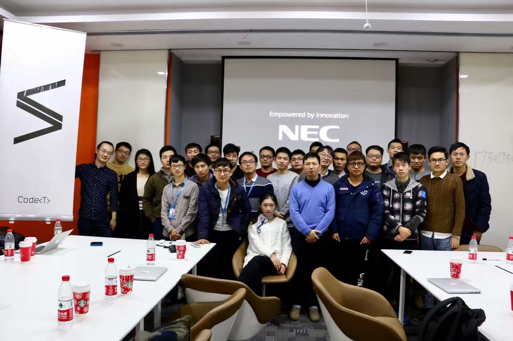
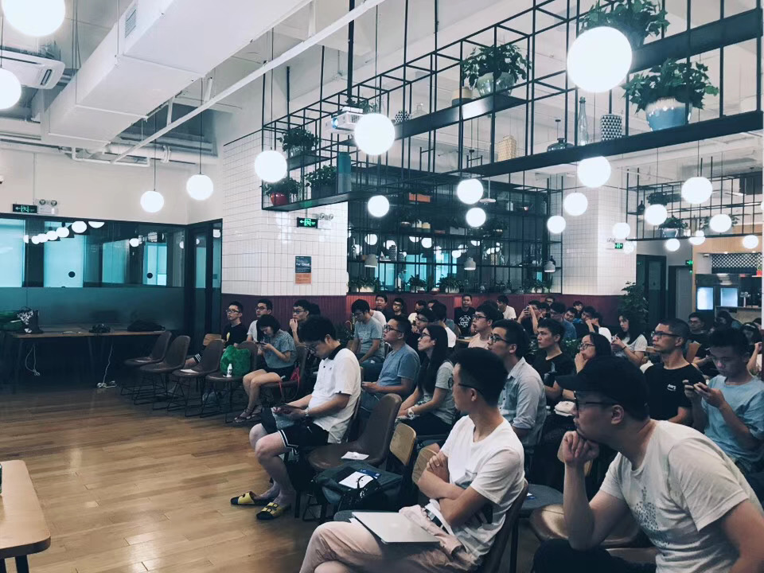

Apple Dev Journey
从 iOS、Swift 到 Vision Pro 与独立开发者，全链路的 Apple 开发生态。
ACTIVE / 4 EVENTS技术一直在变化，但开发者需要真实交流这件事没有变。T Salon 记录实践，也让实践者彼此遇见。

2016.12 / COMMUNITY MEETUP
2019.08 / CITY SALON从 iOS、Swift 到 Vision Pro 与独立开发者，全链路的 Apple 开发生态。
ACTIVE / 4 EVENTS技术前沿、工程实践、创业选择与商业落地。
ACTIVE / 4 EVENTS从算法走向实体，连接机器人、AI 硬件与智能制造。
ACTIVE / 4 EVENTS